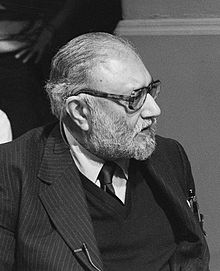

(1926 - 1996)
Photo Tag: Mohammad Abdus Salam in 1987
Mohammad Abdus Salam (29 January 1926 – 21 November 1996) was a Pakistani theoretical physicist. He shared the 1979 Nobel Prize in Physics with Sheldon Glashow and Steven Weinberg for his contribution to the electroweak unification theory. He was the first Pakistani to receive a Nobel Prize in science and the second from an Islamic country to receive any Nobel Prize (after Anwar Sadat of Egypt).
| Born: | 29 January 1926 |
|---|---|
| Died: | 21 November 1996 (aged 70) |
| Nationality: | Pakistani |
| Alma mater: | Government College University Lahore (BA) |
| Punjab University (MA) | |
| St. John's College, Cambridge (PhD) | |
| Awards: | Smith's Prize (1950) |
| Adams Prize (1958) | |
| Sitara-e-Pakistan (1959) | |
| Hughes Medal (1964) | |
| Atoms for Peace Prize (1968) | |
| Royal Medal (1978) | |
| Matteucci Medal (1978) | |
| Nobel Prize in Physics (1979) | |
| Nishan-e-Imtiaz (1979) | |
| Lomonosov Gold Medal (1983) | |
| Copley Medal (1990) |